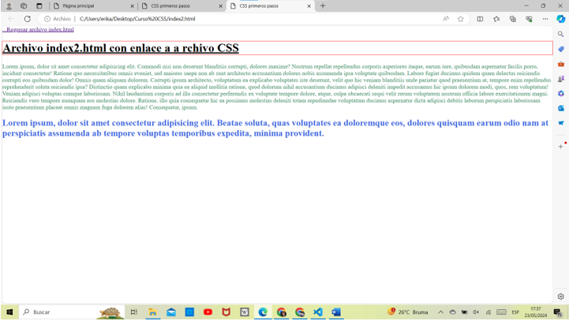
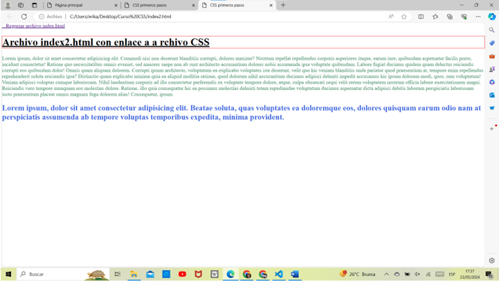

Laboratorios
Este documento HTML define una página web básica con laboratorios de CSS realizados para estilizar elementos HTML.
Laboratorio Clase 1 - CSS
En este laboratorio se realizaron comandos básicos para nuestra primera vez usando CSS, se realizaron Index e Index2
 


Laboratorio Clase 2 - CSS
En este laboratorio aprendimos a usar las secciones, las seudoclases y la sobrescritura de reglas, se realizaron Index3 e Index4